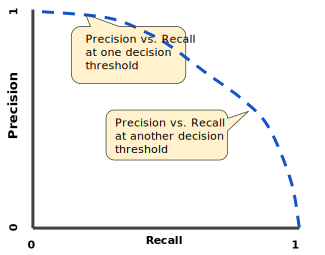
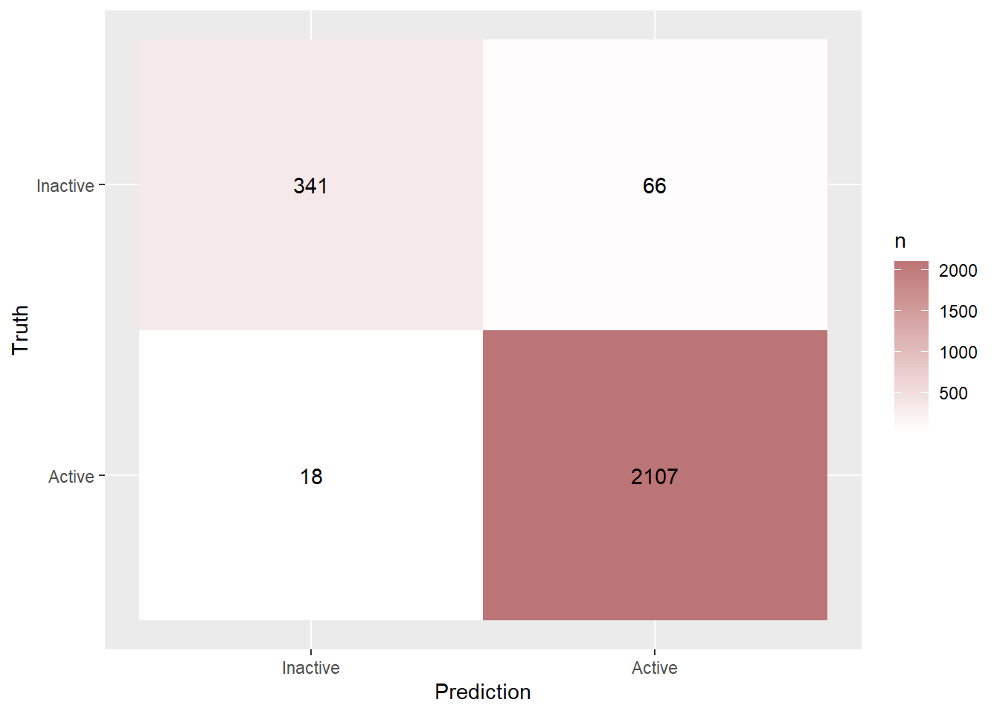

setwd(here::here('Session 5'))
library("tidyverse")
library("tidymodels")
library("vip")
library("finetune")Problem Set 05
Foreword
In this exercise session we will briefly talk about some theoretical considerations when applying bootstrap sampling, bagging and training a random forest before performing a more in-depth case study of binary classification. The case-study assumes that you are familiar with penalized logistic regressions (similar to lasso regression on Exercise Sheet 03) and classification trees (similar to regression trees introduced on Exercise Sheet 04). We will however, revisit different evaluation metrics for a binary classifier before training any of the models which should help you to develop a feeling for model performance.
Note, that some of the models we train might take a few (up to many) minutes depending on your hardware.
If you get stuck at any of the steps for preparing the data or training the models, I recommend checking out the solutions to the previous exercise sheets, since they are almost identical to this one.
Exercises
Exercise 1: Bootstrap, bagging and random forests
In this exercise we will discuss some aspects of bootsrap sampling, bagging and random forest.
Exercise 1a: Bootstrap sampling
When creating a bootstrap sample we create a new sample by drawing from the initial population with replacement.
- Explain why it only makes sense to draw those samples with replacement.
- What distribution is used to draw those samples from the initial population?
Exercise 1b: Bagging
In terms of bagging, explain the following sentence from the lecture:
“Having similar trees leads to correlated estimates.”
Exercise 1c: Random Forests
Random forests can solve the problem of having trees that are too similar. Describe how this is achieved!
Intermezzo: Evaluation of binary classifiers
Before we start with the actual exercise, let us quickly review some important metrics and concepts for evaluating binary classifiers.
Confusion Matrix

ROC Curve and Precision-Recall Curve
When passing a sample into the classification model, the return-value is usually a probability \(p\in[0,1]\) that denotes the probability of the sample belonging to the Positives (in this hypothetical setting we assume that there are two classes “Positives” and “Negatives”). Intuitively it makes sense to say, that a given sample \(x\) belongs to the Positives if \(p\geq q = 0.5\). However, this threshold \(q = 0.5\) can be adjusted. Depending on this threshold \(q\) , the values in our confusion matrix change.
Example:
Set \(q = 0\), then \(p\) is always larger or equal to \(q\), which means that we assign every value to the Positives. Then, our True Positive Rate (\(\mathrm{TPR} = \frac{\mathrm{TP}}{\mathrm{P}}\)) will be equal to \(1\) since all samples are assigned to the Positives. However, the True Negative Rate (\(\mathrm{TNR} = \frac{\mathrm{TN}}{\mathrm{N}}\)) will be equal to 0, since not one sample has been assigned to the Negatives, meaning that \(\mathrm{TN} = 0\) .
A way to visualize the change in our confusion matrix depending on the threshold \(q\) is given by the so-called ROC (Receiver-Operator Curve) curve and Precision-Recall Curve.
ROC Curve:
The ROC curve shows the \(\mathrm{TPR}\) plotted against the \(\mathrm{TNR}\). By plotting these two values against each other, we can identify a good model by checking whether the curve generated by all the thresholds is approaching the left top corner of a plot, indicating that both \(\mathrm{TPR}\) and \(\mathrm{TNR}\) are equal to 1, i.e. the model perfectly classifies all True Positives and all True Negatives. An exemplary plot can be found below.
PR Curve:
The Precision-Recall Curve on the other hand shows the Precision (\(\mathrm{Precision} = \frac{\mathrm{TP}}{\mathrm{TP}+\mathrm{FP}}\) ) plotted against the Recall (\(\mathrm{Recall} = \frac{\mathrm{TP}}{\mathrm{TP}+\mathrm{FN}}\)). Precision basically measures the proportion of correctly identified Positives, while Recall measures the proportion of correctly identified actual Positives. If the line generated by a model is close to the top right corner, the model is relevant, has a high precision, and sensitivity.
An exemplary plot can be found below.

What does a high precision and recall actually mean (I find the definition above kind of hard to grasp)? Let us consider a simple example:
Example:
Imagine you are developing a classification model for detecting a rare disease (Positves corresponds to detecting the decease). There are 10000 people in the observed data and only 10 of them are infected with said disease. One way to set up a model (regardless of the features) can be to simply label everyone as not having the disease which would effectively result in an accuracy of 99.9%, Hurray . However, this model is obviously not the best since we failed to identify any of the sick people correctly. So, after tweaking the model we now have a model that might be less accurate but identifies sick patients better. What does better in this context mean? By looking at the definition of Precision and Recall above, you may notice that they only differ by the second summand in the denominator of the fraction, namely False Positives and False Negatives. Before we continue, think for yourself, which of those are worse in the scenario of detecting a disease? The right answer would be False Negatives, since we fail to identify a sick patient! That is why a sensitive model is crucial here as well. Maybe you can come up with an exemplary scenario where a high precision is crucial?
In summary: especially for imbalanced datasets, we do not only want to achieve a high accuracy since that is fairly easy to achieve. We Also want a high precision or recall, focusing on one or the other depending on the model objective.
Exercise 2: Binary classification - A case study
In this exercise we want to utilize our newly gained knowledge about Bagging and compare a random forest model to a single classification tree and penalized logistic regression.
The dataset we will consider in this exercise will be the Credit Card customers dataset we briefly explored in the first exercise session. The goal is to build different binary classifiers to predict, whether a customer will get churned or not. Note, that a churned customer is basically a customer who has discontinued or stopped using the credit card service.
The main idea for such classification tasks is the following:
Start out by building a simple base model, which allows for an easy interpretation of parameters. A penalized logistic regression will be this base model in our case.
Move to a slightly more complex model where the derivation of model parameters is less straight forward but the model performance increases. The model we will consider for this scenario is a decision tree.
As a last step, a highly complex model is trained where the focus is no longer on explainability rather than getting the best possible out of sample performance. An example of such a model is a random forest, which will also be our model of choice for this step.
credit_info <- read.csv("BankChurners.csv")Exercise 2a: Data preparation and exploration
Exercise 2a i:
glimpse(credit_info)Rows: 10,127
Columns: 21
$ CLIENTNUM <int> 768805383, 818770008, 713982108, 769911858, 7…
$ Attrition_Flag <chr> "Existing Customer", "Existing Customer", "Ex…
$ Customer_Age <int> 45, 49, 51, 40, 40, 44, 51, 32, 37, 48, 42, 6…
$ Gender <chr> "M", "F", "M", "F", "M", "M", "M", "M", "M", …
$ Dependent_count <int> 3, 5, 3, 4, 3, 2, 4, 0, 3, 2, 5, 1, 1, 3, 2, …
$ Education_Level <chr> "High School", "Graduate", "Graduate", "High …
$ Marital_Status <chr> "Married", "Single", "Married", "Unknown", "M…
$ Income_Category <chr> "$60K - $80K", "Less than $40K", "$80K - $120…
$ Card_Category <chr> "Blue", "Blue", "Blue", "Blue", "Blue", "Blue…
$ Months_on_book <int> 39, 44, 36, 34, 21, 36, 46, 27, 36, 36, 31, 5…
$ Total_Relationship_Count <int> 5, 6, 4, 3, 5, 3, 6, 2, 5, 6, 5, 6, 3, 5, 5, …
$ Months_Inactive_12_mon <int> 1, 1, 1, 4, 1, 1, 1, 2, 2, 3, 3, 2, 6, 1, 2, …
$ Contacts_Count_12_mon <int> 3, 2, 0, 1, 0, 2, 3, 2, 0, 3, 2, 3, 0, 3, 2, …
$ Credit_Limit <dbl> 12691.0, 8256.0, 3418.0, 3313.0, 4716.0, 4010…
$ Total_Revolving_Bal <int> 777, 864, 0, 2517, 0, 1247, 2264, 1396, 2517,…
$ Avg_Open_To_Buy <dbl> 11914.0, 7392.0, 3418.0, 796.0, 4716.0, 2763.…
$ Total_Amt_Chng_Q4_Q1 <dbl> 1.335, 1.541, 2.594, 1.405, 2.175, 1.376, 1.9…
$ Total_Trans_Amt <int> 1144, 1291, 1887, 1171, 816, 1088, 1330, 1538…
$ Total_Trans_Ct <int> 42, 33, 20, 20, 28, 24, 31, 36, 24, 32, 42, 2…
$ Total_Ct_Chng_Q4_Q1 <dbl> 1.625, 3.714, 2.333, 2.333, 2.500, 0.846, 0.7…
$ Avg_Utilization_Ratio <dbl> 0.061, 0.105, 0.000, 0.760, 0.000, 0.311, 0.0…Given this initial glimpse into the dataset, let us briefly talk about the some of the different features and what they mean, since some of them are kind of ambiguous.
| Feature | Description |
|---|---|
| CLIENTNUM | Client number. Unique identifier for the customer holding the account |
| Attrition_Flag | Internal event (customer activity) variable - if the account is closed then 1 else 0 |
| Months_on_book | Period of relationship with bank |
| Months_Inactive_12_mon | No. of months inactive in the last 12 months |
| Credit_Limit | Credit Limit on the Credit Card |
| Total_Revolving_Bal | Portion of credit card spending that goes unpaid at the end of a billing cycle |
| Avg_Open_To_Buy | Open to Buy Credit Line (Average of last 12 months) |
| Total_Amt_Chng_Q4_Q1 | Change in Transaction Amount (Q4 over Q1) |
| Total_Trans_Amt | Total Transaction Amount (Last 12 months) |
| Total_Trans_Ct | Total Transaction Count (Last 12 months) |
| Total_Ct_Chng_Q4_Q1 | Change in Transaction Count (Q4 over Q1) |
| Avg_Utilization_Ratio | Average Card Utilization Ratio (Divide the total balance by the total credit limit) |
We can now directly with preparing our data for the modelling pipeline.
Create a new dataset called credit_info_clean by applying the following transformations to the initial dataset credit_info:
- Convert the features
Income_CategoryandEducation_Levelinto ordered factors. - Convert the features
Marital_Status,Card_Category,Gender,CLIENTNUM, and the outcome variableAttrition_Flaginto factors. - For the factor Attrition_Flag, change the labels to
"Inactive"and"Active"
Exercise 2a ii:
Familiarize yourself with the gt_plt_summary function of the {gtExtras} package and apply it to the newly created credit_info_clean. What can be said about the balance or imbalance of the given dataset?
Exercise 2a iii:
Create a initial_split object called split with the credit_info_clean dataset. When creating the split, use the option strata = Attrition_Flag in order to make sure that the ration of attrited customers in the training and test dataset are the same.
Afterwards, create a training dataset called data_train and testing dataset called data_test using the initial_split object split.
Finally, for the data_train dataset, create a vfold_cv object called folds with additional parameter v = 10.
Exercise 2a iv:
Create a recipe called rec_ci by following the steps described below.
As a formula, fit the variable
Attrition_Flagon every other feature and set thedataparameter todata_train.Update the role of the variable
CLIENTNUMby setting it to"ID".Create ordinal scores for all ordered predictors.
Create dummy variables for all factor predictors.
Apply a zero variance filter on all predictors.
Familiarize yourself with the
step_corrfunction, add it to the recipe, and apply it to all predictors.
Exercise 2a v:
Create a workflow object called ci_wf and add the newly created recipe rec_ci. Afterwards, create a metric_setcalled eval_set that contains the metric roc_auc.
Exercise 2b: Training a base model (penalized logistic regression)
Exercise 2b i:
Utilize the logistic_reg function to create a pure lasso model called log_mod with penalty = tune(). Make sure you set the engine of the model to "glmnet"! Then, add the model to the newly created workflow object called ci_wf using the add_model function.
Note, that we usually use the update_model function for specifying the model, however when initializing the workflow the model object is set to NONE so wee need to add a model first before we can update it later.
Exercise 2b ii:
Create a regular grid called lr_grid for the logistic model penalty with \(30\) levels. Recall, that you can select the tuning parameters by piping the workflow object to the extract_parameter_set_dials function.
Exercise 2b iii:
In this sub-exercise we want to train the penalized logistic model. However, instead of simply using the tune_grid function with the specified grid, metrics and resample method, we add an additional option called control which we set to control_grid(save_pred = TRUE). This allows us to access the out-of-sample cross validation predictions directly after tuning the model. We will need those to create an ROC curve after successfully training and tuning the model.
In accordance with the steps outlined above, train the linear model using the tune_grid function and save the results in a tibble called lr_res.
Exercise 2b iv:
Given the results in the lr_res tibble, select the best model according to the “one-standard” rule based on the "roc_auc" metric, and call it lr_res_best. Then, train a final model on the whole training data called last_lr_fit by using the finalize_workflow and last_fit function.
Exercise 2b v:
Given the following two tibbles that contain the metrics specifity, sensetivity, recall, and precision create two plots that display the ROC Curve and Precision-Recall curve for the penalized logistic model. You can either use the autoplot function or create the plots from scratch using ggplot. An example of what those plots could look like can be found below.
lr_auc<- lr_res %>%
collect_predictions(parameter = lr_res_best) %>%
roc_curve(Attrition_Flag,.pred_Inactive) %>%
mutate(model = "Logistic Regression")
lr_pr<- lr_res %>%
collect_predictions(parameter = lr_res_best) %>%
pr_curve(Attrition_Flag,.pred_Inactive) %>%
mutate(model = "Logistic Regression")Exercise 2b vi:
Since we have used a lasso logistic regression, some of the parameters might have been driven to 0. Find if there were any!
Hint: You can use the extract_fit_parsnip() %>% tidy() on your final model to extract the model parameters.
Exercise 2c: Training a more advanced model (classification tree)
The following sub-tasks will be very similar to the ones from the penalized logistic regression, as we only have to define a new model, update our workflow with this new model and define a new tunegrid.
Exercise 2c i:
Create a classification tree called ct_model by using the decision_tree function with the parameters min_n = tune(), tree_depth = tune(), cost_complexity = tune(). Set the mode to "classification" and the engine to "rpart".
Exercise 2c ii:
Update the workflow ci_wf by using the update_model function. Then, create a regular grid called ct_grid for all the parameters we set to tune() in the previous exercise and set the level to \(4\). Finally, train the model using the tune_grid function with the newly defined grid ct_grid. The other parameters ( metrics, resamples, and control) are the same as in Exercise 2b iii. Save the results in a tibble called ct_res.
Warning: Training the model might take a few minutes.
Exercise 2c iii:
Given the results in the ct_res tibble, select the best model based on the "roc_auc" metric, and call it ct_res_best.
Exercise 2c iv:
Given the following two tibbles that contain the metrics specifity, sensetivity, recall, and precision, create two plots that display the ROC Curve and Precision-Recall curve for the classification tree. You can either use the autoplot function or create the plots from scratch using ggplot. An example of what those plots could look like can be found below.
ct_auc<- ct_res %>%
collect_predictions(parameter = ct_res_best) %>%
roc_curve(Attrition_Flag,.pred_Inactive) %>%
mutate(model = "Classification Tree")
ct_pr<- ct_res %>%
collect_predictions(parameter = ct_res_best) %>%
pr_curve(Attrition_Flag,.pred_Inactive) %>%
mutate(model = "Classification Tree")Exercise 2c v:
Using the finalize_worflow and last_fit function, train a final classification tree based on the ct_res_best model on the whole training dataset. Then, by utilizing the vip::vip function, find the most important features of this last regression tree.
Hint: You first have to extract the fit engine by using the extract_fit_engine function and passing this output to the vip::vip function.
Exercise 2d: Training a complex model (random forest)
Last but not least, we want to train a random forest which hopefully performs the best for our classification task. The process is fairly similar to training the classification tree and penalized logistic regression, thanks to the standardized {tidymodels} workflow.
Exercise 2d i:
Create a random forest model called rf_model by using the rand_forest function with the parameters mode = "classification", mtry = tune(), min_n = tune() and trees = 1000. Pipe this model to the set_engine function, where you pass "ranger" and importance = "impurity" as an argument. Let us briefly talk about the different parameters we have specified.
mtry stands for the number of randomly sampled predictors, i.e., the number of predictors that will be randomly sampled at each split when creating tree models. Note, that this number depends on the number of predictors in our recipe. We can however, still tune this parameter!
min_n stands for the minimum number of data points in a node that is required for the node to be split further.
trees stands for the number of trees contained in a random forest.
importance = "impurity" calculates the importance of a variable by considering its impurity, i.e., the total decrease in node impurities from splitting on the variable, averaged over all trees.
Exercise 2d ii:
Update the model in the workflow object to the newly created random forest model rf_model. Afterwards, train the model using the tune_grid function with the parameters grid = 10, metrics = eval_set, resamples = folds, and control = control_grid(save_pred = TRUE). Save the results in a tibble called rf_res.
Warning: Training the model might take a up to 15 minutes.
i Creating pre-processing data to finalize unknown parameter: mtryExercise 2d iii:
Given the results in the rf_res tibble, select the best model based on the "roc_auc" metric, and call it rf_res_best.
Exercise 2d iv:
Given the following two tibbles that contain the metrics specifity, sensetivity, recall, and precision, create two plots that display the ROC Curve and Precision-Recall curve for the random forest. You can either use the autoplot function or create the plots from scratch using ggplot. An example of what those plots could look like can be found below.
rf_auc <-
rf_res %>%
collect_predictions(parameters = rf_res_best) %>%
roc_curve(Attrition_Flag, .pred_Inactive) %>%
mutate(model = "Random Forest")
rf_pr <-
rf_res %>%
collect_predictions(parameters = rf_res_best) %>%
pr_curve(Attrition_Flag, .pred_Inactive) %>%
mutate(model = "Random Forest")Exercise 2d v:
Using the finalize_worflow and last_fit function, train a final random forest based on the rf_res_best model on the whole training dataset. Then, by utilizing the vip::vip function, find the most important features of this last random forest.
Hint: You first have to use the extract_fit_engine function and passing this output to the vip::vip function.
Exercise 2e: Evaluating all models
Given the following plots, answer the following questions:
- What can be said about the discriminatory power of the classes?
- Which curve should be considered for assessing the accurracy of the models?
- Which model performs the best?
Exercise 2f: Confusion matrices
Below, you can find the confusion matrix for the previously trained final random forest. Calculate the following metrics:
Precision
Accuracy
Negative Predictive Value
[1] Inactive Active Inactive Active
Levels: Active Inactive